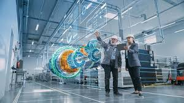

A student saw engineers designing roads, machines, buildings, and technology that changed people's lives. The student wondered: How do engineers solve such complex problems? Engineering Science provides the foundation by combining scientific knowledge with practical applications.
Engineering Science applies scientific and mathematical principles to solve real-world problems. It serves as a bridge between science and engineering by helping students understand how technology, machines, structures, and systems work.
Engineering is not just about machines. Engineers solve problems. Whether it is transportation, healthcare, energy, communication, or construction, engineers use creativity and science to improve lives and build the future.
This is only a small introduction. If you want to understand how programmes connect to university courses, careers, opportunities, and future success, get a copy of:
The guide designed to help students make informed decisions about their future and discover opportunities they may never have considered.